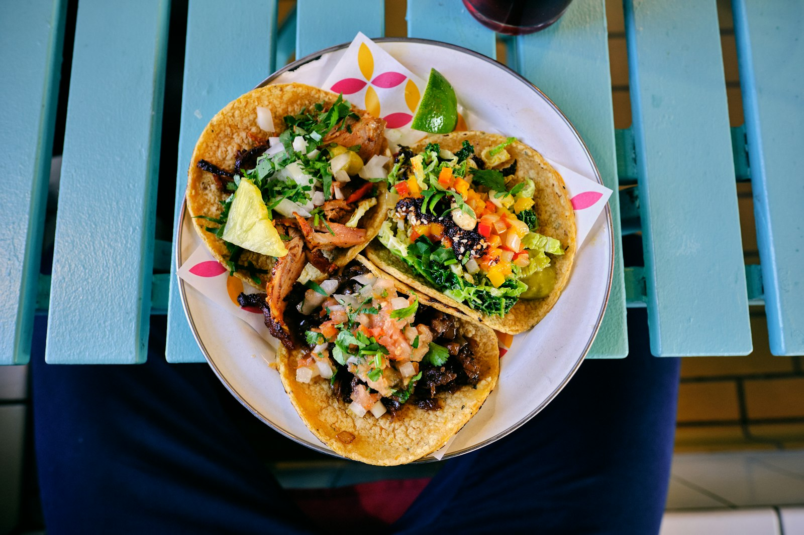

East End carnitas
Carnitas and handmade tortillas, Friday through Sunday.
A weekend carnitas stand listed at 820 Broadway Street in Houston's East End, behind the flea market according to reviews. Call (346) 779-7156 to confirm hours.
4.7 stars from 103 Google reviews
Carnitas Pueblo Nuevo (also listed as Carnitas Pueblo Nuevo Gto) is a food stand at 820 Broadway St in Houston. Reviews describe carnitas sold by the pound, handmade tortillas, salsa, pico de gallo, jalapeños, and other cuts such as cueritos and buche, plus tables under a canopy.
Google hours currently show Friday 8 a.m.–1:30 p.m. and Saturday–Sunday 8 a.m.–2 p.m., with Monday through Thursday closed. One older review said they only sold on Saturday and Sunday, so hours may have changed. Call before you go.

4.7 stars from 103 Google reviews. Quotes below are from public reviews and are not testimonials created for this demo.
“It's behind the flea market. The carnita meat and tortillas were delicious. I also liked the salsa. There are tables under a canopy to sit and eat.”
“Absolutely love this place, come here everywhere weekend for some great carnitas, and their hand made tortillas”
“We bought carnitas,cueritos and buche by the lb. They sell you homemade tortillas, which makes the food even better. They offer salsa,pico de Gallo, and jalapeño. These are delicious.”
“These are probably the best carnitas I've had in a while. It would be hard to top these. No wonder there is always a line for them. They also make their own tortillas, which makes the food even better.”
An older review said Saturday and Sunday only. Current Google hours also list Friday. Call to confirm.